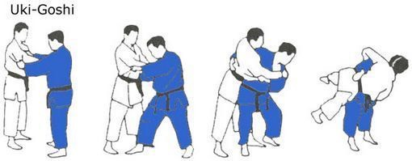
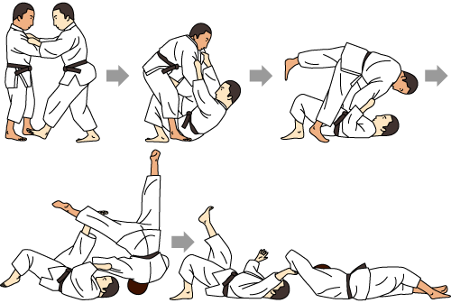

Ha bármi módón elég kezözel kerülsz az ellenfélhez, akkor a csípődet az ő csípője/dereka alá beakasztva ki tudod tolni a lábaddal a súlyát, és amikor a levegőben van onnan könnyen mozdítható a föld felé :D

AZ ellenfeled ruháját megragadva, bele taposol a belső combjába és hátra dőlsz teljes testtel miközben magara rántod az ellenfelet, ezután a lábaddal elrúgod magadtól amíg ő a levegőben van.
